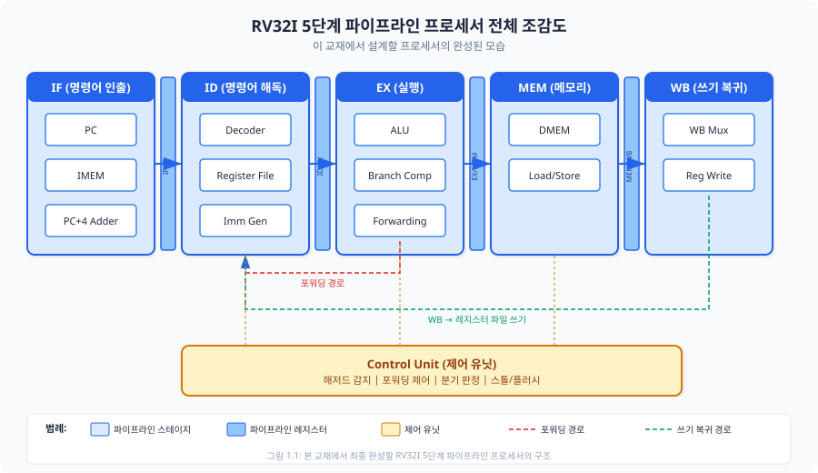
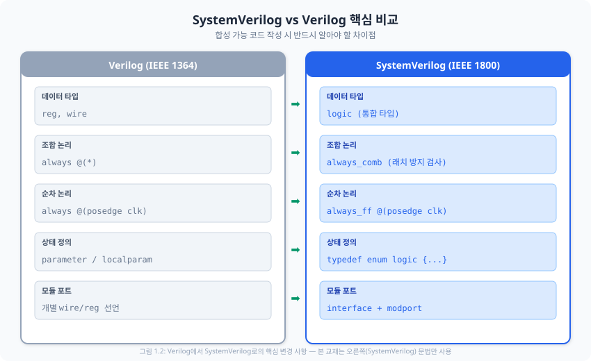
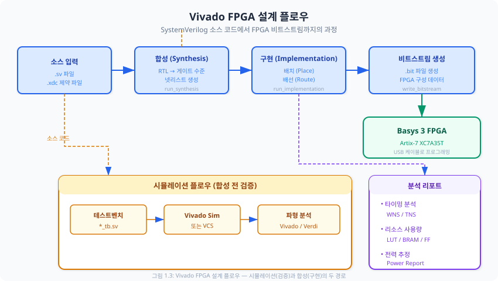

이 챕터에서는 본 교재를 통해 최종적으로 완성할 RV32I 파이프라인 프로세서의 전체 모습을 조감하고, 설계에 필요한 개발 환경을 구축하며, SystemVerilog 핵심 문법을 복습한 뒤, 첫 번째 FPGA 합성 실습으로 자신감을 얻습니다.
본 교재의 최종 목표는 명확합니다. RISC-V RV32I 명령어 집합(Instruction Set Architecture, ISA)을 완전히 지원하는 5단계 파이프라인 프로세서를 설계하고, 이를 실제 FPGA 보드 위에서 동작시키는 것입니다. 단순히 이론을 학습하는 것이 아니라, SystemVerilog로 작성한 RTL(Register-Transfer Level) 코드가 실리콘 위에서 살아 움직이는 순간을 직접 경험하게 됩니다.
RISC-V는 2010년 UC Berkeley에서 시작된 개방형 명령어 집합 아키텍처(Open ISA)입니다. ARM이나 x86과 달리 라이선스 비용이 없으며, 명령어 집합이 모듈(Module) 구조로 설계되어 교육 목적에 매우 적합합니다. 기본 정수 명령어 집합인 RV32I는 단 47개의 명령어로 구성되어 있으며, 이것만으로도 완전한 범용 프로세서를 구현할 수 있습니다. ARM의 수백 개 명령어와 비교하면 학습 부담이 훨씬 적으면서도, 현대 프로세서 설계의 핵심 원리를 모두 포함하고 있습니다.
또한 RISC-V는 산업계에서 빠르게 채택되고 있습니다. SiFive, Andes Technology 등의 반도체 기업이 RISC-V 기반 상용 프로세서를 출시하고 있으며, 구글, 삼성, 퀄컴 등도 RISC-V 생태계에 적극 참여하고 있습니다. 본 교재에서 배우는 내용은 곧바로 실무 면접과 업무에 활용할 수 있는 지식이 됩니다.
아래 그림은 이 교재를 끝까지 완주했을 때 여러분이 손에 쥐게 될 결과물입니다. 지금은 각 블록의 의미를 완벽히 이해할 필요가 없습니다. 다만 전체 그림을 머릿속에 넣어 두면, 이후 각 챕터에서 "지금 내가 전체 퍼즐의 어느 조각을 만들고 있는지" 항상 파악할 수 있습니다.

그림 1.1에서 파란색 블록은 5개의 파이프라인 스테이지(Stage)를 나타냅니다. 왼쪽부터 차례로 살펴보겠습니다.
각 스테이지 사이에는 파이프라인 레지스터(Pipeline Register)가 삽입되어 있습니다. 이 레지스터 덕분에 서로 다른 명령어가 각 스테이지에서 동시에 실행될 수 있습니다. 마치 공장의 조립 라인(Assembly Line)처럼, 한 명령어가 EX 스테이지에서 연산을 수행하는 동안 다음 명령어는 ID 스테이지에서 해독되고, 그 다음 명령어는 IF 스테이지에서 인출됩니다. 이것이 파이프라인의 핵심 원리이며, 이를 통해 이상적으로 매 클록 사이클(Clock Cycle)마다 하나의 명령어를 완료할 수 있습니다.
이 교재는 총 9개의 파트(Part)로 구성되어 있으며, 각 파트는 이전 파트의 결과물 위에 새로운 기능을 추가하는 점진적 구조(Incremental Design)를 따릅니다.
| 파트 | 내용 | 마일스톤 |
|---|---|---|
| Part 0 | 환경 구축 및 준비 (지금 여기) | LED 점멸 성공 |
| Part 1 | RISC-V ISA 이해 | 명령어 비트 패턴 해독 |
| Part 2 | 단일 사이클 프로세서 | 피보나치 수열 CPU 실행 |
| Part 3 | 멀티사이클 프로세서 | FSM CPU + 성능 비교 |
| Part 4 | 5단계 파이프라인 | 버블정렬 FPGA 실행 |
| Part 5 | 캐시 메모리 | 캐시 히트율 측정 |
| Part 6 | AMBA 버스 | UART "Hello RISC-V" 전송 |
| Part 7 | 예외/인터럽트 | 타이머 인터럽트 LED 제어 |
| Part 8 | FPGA 최종 구현 | C 프로그램 실행 데모 |
프로세서를 설계하려면 먼저 적절한 도구가 필요합니다. 목수가 좋은 연장 없이 집을 짓기 어려운 것처럼, 하드웨어 설계자에게는 합성 도구(Synthesis Tool), 시뮬레이터(Simulator), FPGA 보드가 필수입니다. 이 절에서는 본 교재에서 사용할 세 가지 핵심 도구를 설치하고 정상 동작을 검증합니다.
Xilinx Vivado Design Suite는 본 교재의 핵심 도구입니다. Vivado는 RTL 합성(Synthesis), 구현(Implementation), 비트스트림(Bitstream) 생성, 시뮬레이션까지 모든 과정을 하나의 통합 환경에서 수행할 수 있는 IDE(Integrated Development Environment, 통합 개발 환경)입니다.
설치 절차는 다음과 같습니다.
C:\Xilinx\Vivado\2024.1\settings64.bat을 실행하여 환경을 설정합니다.Synopsys VCS는 업계 표준 시뮬레이터로, 대규모 설계의 시뮬레이션에서 Vivado Simulator보다 빠른 성능을 보여줍니다. Verdi는 VCS와 연동되는 파형 뷰어(Waveform Viewer)로, 직관적인 디버깅 인터페이스를 제공합니다. 대학원 환경에서는 학교의 EDA 라이선스 서버를 통해 사용할 수 있는 경우가 많습니다.
VCS와 Verdi는 주로 Linux 환경에서 실행됩니다. Windows 환경에서는 WSL2(Windows Subsystem for Linux 2)를 통해 설치하거나, 학교의 원격 서버에 접속하여 사용합니다. 본 교재의 모든 실습은 Vivado Simulator만으로도 충분히 수행할 수 있으므로, VCS/Verdi가 없더라도 진행에 문제가 없습니다.
Digilent Basys 3는 Xilinx Artix-7 XC7A35TCPG236-1 FPGA를 탑재한 교육용 보드입니다. 본 교재에서 설계하는 프로세서를 물리적으로 구현하고 검증하는 데 사용합니다. 주요 사양은 다음과 같습니다.
| 항목 | 사양 | 교재 활용 |
|---|---|---|
| FPGA | Artix-7 XC7A35TCPG236-1 | 프로세서 합성 대상 |
| LUT (논리 셀) | 20,800개 | 데이터패스 + 제어 로직 |
| BRAM | 50블록 (총 1,800Kb) | 명령어/데이터 메모리, 캐시 |
| DSP48E1 | 90개 | ALU 곱셈 연산 (Part 9) |
| 클록 | 100MHz 온보드 | 시스템 클록 소스 |
| LED | 16개 | 디버그 출력, GPIO |
| USB-UART | FTDI FT2232HQ | 시리얼 통신 (Part 6) |
보드를 처음 사용할 때는 다음을 확인하십시오.
이 교재는 Verilog 경험이 있는 독자를 대상으로 합니다. 따라서 디지털 논리 설계의 기본 개념(플립플롭, 멀티플렉서, 가산기 등)을 이미 알고 있다고 가정합니다. 이 절에서는 기존 Verilog 지식을 SystemVerilog로 "업그레이드"하는 데 초점을 맞춥니다.
Verilog를 아는 당신은 이미 절반을 안 셈입니다. SystemVerilog는 Verilog의 상위 집합(Superset)이므로, 기존에 알고 있는 문법 대부분이 그대로 유효합니다. 새로 배울 내용은 코드 품질과 안전성을 높이기 위한 몇 가지 개선 사항입니다.

Verilog에서 가장 혼란스러운 부분 중 하나는 reg와 wire의 구분이었습니다. reg는 이름과 달리 항상 레지스터를 의미하지 않으며, always 블록 내에서 값을 할당받는 변수를 위한 타입이었습니다. SystemVerilog에서는 logic 타입 하나로 두 가지를 통합합니다.
// ❌ Verilog 스타일 (본 교재에서 사용하지 않음)
wire [31:0] data_bus;
reg [31:0] counter;
// ✅ SystemVerilog 스타일 (본 교재 표준)
logic [31:0] data_bus; // 연속 할당(assign)이든 절차적 할당이든 모두 가능
logic [31:0] counter; // 하나의 타입으로 통일
logic 타입은 단일 드라이버(Single Driver) 규칙을 따릅니다. 즉, 하나의 logic 신호에 값을 할당하는 소스는 반드시 하나여야 합니다. 다중 드라이버(Multi-Driver)가 필요한 경우(예: 양방향 버스)에는 wire를 여전히 사용해야 합니다만, 본 교재의 프로세서 설계에서는 이러한 상황이 거의 없으므로 logic만으로 충분합니다.
Verilog의 always 블록은 조합 논리(Combinational Logic)와 순차 논리(Sequential Logic)를 구분하지 않아 설계자의 의도와 다른 하드웨어가 합성될 위험이 있었습니다. 대표적인 문제는 의도치 않은 래치(Latch) 추론입니다. SystemVerilog는 이 문제를 근본적으로 해결합니다.
// -----------------------------------------------------------------------
// 순차 논리: always_ff — 플립플롭(Flip-Flop)을 합성
// -----------------------------------------------------------------------
// 반드시 posedge/negedge 클록 에지를 사용
// 논블로킹 할당(<=)만 사용할 것
always_ff @(posedge clk or negedge rst_n) begin
if (!rst_n) begin
counter <= '0; // 비동기 리셋: 0으로 초기화
end else begin
counter <= counter + 1'b1; // 매 클록 상승 에지마다 1 증가
end
end
// -----------------------------------------------------------------------
// 조합 논리: always_comb — 게이트 로직을 합성
// -----------------------------------------------------------------------
// 감도 리스트(sensitivity list) 자동 생성
// 블로킹 할당(=)만 사용할 것
// 합성 도구가 래치 추론 시 경고/오류 발생
always_comb begin
case (sel)
2'b00: result = a + b;
2'b01: result = a - b;
2'b10: result = a & b;
default: result = '0; // default 필수! 래치 방지
endcase
end
always_ff와 always_comb의 관계는 마치 "이것은 서류 보관함(플립플롭)이에요"와 "이것은 계산기(조합 논리)에요"라고 라벨을 붙이는 것과 같습니다. Verilog의 always는 라벨 없는 빈 상자여서 무엇이 들어갈지 열어봐야 알 수 있었습니다.
할당 연산자의 선택은 합성 결과에 직접적인 영향을 미칩니다. 규칙은 단순합니다.
| 블록 유형 | 할당 연산자 | 합성 결과 | 이유 |
|---|---|---|---|
always_ff |
<= (논블로킹) |
플립플롭 | 동시 업데이트 시뮬레이션 보장 |
always_comb |
= (블로킹) |
조합 게이트 | 순차적 계산으로 중간값 재사용 |
assign |
= |
연속 구동 와이어 | 단순 연결 또는 조합 논리 |
FSM(Finite State Machine, 유한 상태 기계) 설계 시 상태를 숫자 상수(parameter)로 정의하는 것은 가독성이 떨어집니다. SystemVerilog의 typedef enum을 사용하면 상태 이름이 시뮬레이션 파형에도 표시되어 디버깅이 훨씬 수월해집니다.
// ❌ Verilog 스타일: 상태를 숫자로 정의
localparam IDLE = 2'b00;
localparam RUN = 2'b01;
localparam DONE = 2'b10;
reg [1:0] state;
// ✅ SystemVerilog 스타일: 열거형 타입 사용
typedef enum logic [1:0] {
IDLE = 2'b00,
RUN = 2'b01,
DONE = 2'b10
} state_t;
state_t state, next_state; // 파형 뷰어에서 "IDLE", "RUN" 등 이름으로 표시
시뮬레이션에서는 동작하지만 FPGA에 합성할 수 없는 코드는 무의미합니다. 본 교재에서 작성하는 모든 설계 코드(테스트벤치 제외)는 합성 가능해야 합니다. 핵심 규칙을 정리합니다.
logic [7:0] data = 8'hFF;와 같은 초기값은 합성 시 무시됩니다. 반드시 리셋 로직으로 초기화하십시오.#10 data = 1'b1;과 같은 시간 지연은 합성 불가합니다. 테스트벤치에서만 사용합니다.$display, $finish, $readmemh 등은 테스트벤치 전용입니다.always_comb 내의 case 문과 if 문은 반드시 모든 경우를 포함해야 합니다. default와 else를 항상 작성하여 래치 추론을 방지합니다.always_ff에서는 하나의 클록 에지만 사용합니다. 양쪽 에지(posedge clk or negedge clk)를 동시에 사용하는 것은 FPGA에서 합성 불가입니다.일관된 코딩 스타일은 코드의 가독성과 유지보수성을 높입니다. 본 교재에서는 다음 규칙을 따릅니다.
| 항목 | 규칙 | 예시 |
|---|---|---|
| 들여쓰기 | 3칸 스페이스 | if (rst_n) |
| 신호 명명 | snake_case | alu_result, reg_write_en |
| 모듈 명명 | snake_case | register_file, alu_unit |
| 상수 | 대문자 + 밑줄 | MAX_COUNT, DATA_WIDTH |
| 능동 저 신호 | _n 접미사 | rst_n, cs_n |
| 주석 | 한국어 | // 리셋 시 카운터 초기화 |
| 파일 인코딩 | UTF-8 | 한국어 주석 호환 |
이론만으로는 자신감이 생기지 않습니다. 이 절에서는 간단한 LED 점멸(LED Blinker) 모듈을 작성하고, Vivado를 사용하여 합성한 뒤, 실제 Basys 3 보드에서 LED가 깜빡이는 것을 확인합니다. 이 실습이 완료되면, 여러분은 "SystemVerilog 코드가 실제 하드웨어에서 동작한다"는 것을 직접 체험하게 됩니다. 이 경험은 앞으로의 학습에서 가장 중요한 동기가 됩니다.
LED를 깜빡이기까지 거쳐야 할 과정을 먼저 살펴보겠습니다. 아래 그림은 SystemVerilog 소스 코드가 FPGA 비트스트림으로 변환되는 전체 과정을 보여줍니다.

그림 1.3의 각 단계를 설명합니다.
always_ff는 플립플롭으로, always_comb는 LUT로 변환됩니다.이제 실제 코드를 작성합니다. LED 점멸 모듈은 100MHz 시스템 클록을 분주(Divide)하여 사람의 눈으로 인식할 수 있는 속도(약 1Hz)로 LED 패턴을 순환시킵니다.
설계의 핵심은 카운터(Counter)입니다. 100MHz 클록에서 1초는 1억 사이클입니다. 0.5초마다 LED 패턴을 변경하려면 5천만 사이클을 카운트한 후 틱(Tick) 신호를 생성하면 됩니다. 이 틱 신호를 기준으로 LED 패턴을 좌측 순환 시프트(Circular Left Shift)합니다.
// ============================================================================
// LED 점멸 모듈 — Basys 3 FPGA 보드용
// 100MHz 클록 분주 → 0.5초 주기 틱 → LED 패턴 순환
// ============================================================================
module led_blinker (
input logic clk, // 100MHz 시스템 클록
input logic rst_n, // 능동 저(Active-Low) 리셋
output logic [3:0] led // LED 출력 4비트
);
// 0.5초 = 50,000,000 사이클 (100MHz 기준)
localparam int unsigned MAX_COUNT = 50_000_000 - 1;
logic [25:0] counter; // 26비트 카운터
logic tick; // 0.5초 틱 신호
logic [3:0] led_pattern; // LED 패턴 레지스터
// 카운터 로직: 0.5초마다 틱 생성
always_ff @(posedge clk or negedge rst_n) begin
if (!rst_n) begin
counter <= '0;
end else if (counter == MAX_COUNT[25:0]) begin
counter <= '0;
end else begin
counter <= counter + 1'b1;
end
end
// 틱 신호 (조합 논리)
always_comb begin
tick = (counter == MAX_COUNT[25:0]);
end
// LED 패턴 순환: 0001 → 0010 → 0100 → 1000 → 0001
always_ff @(posedge clk or negedge rst_n) begin
if (!rst_n) begin
led_pattern <= 4'b0001;
end else if (tick) begin
led_pattern <= {led_pattern[2:0], led_pattern[3]};
end
end
assign led = led_pattern;
endmodule
이 코드에서 주목할 점을 정리합니다.
always_ff: 카운터와 LED 패턴 레지스터는 클록에 동기화된 순차 논리이므로 always_ff를 사용합니다.always_comb: 틱 신호는 카운터 값의 비교 결과이므로 조합 논리입니다.localparam: MAX_COUNT는 합성 시 상수로 치환됩니다. 시뮬레이션 시에는 이 값을 작게 변경하여 빠르게 검증할 수 있습니다.'0: SystemVerilog의 기본값 표기법으로, 좌변의 비트폭에 맞게 모든 비트를 0으로 채웁니다.{led_pattern[2:0], led_pattern[3]}: 결합(Concatenation) 연산자를 사용한 좌측 순환 시프트입니다.
XDC(Xilinx Design Constraints) 파일은 SystemVerilog 코드의 입출력 포트를 FPGA의 물리적 핀(Pin)에 연결하는 역할을 합니다. 코드에서 선언한 clk, rst_n, led 신호가 Basys 3 보드의 어떤 핀에 연결되는지를 지정합니다.
## 클록 신호: 100MHz (Basys 3 W5 핀)
set_property -dict { PACKAGE_PIN W5 IOSTANDARD LVCMOS33 } [get_ports {clk}]
create_clock -add -name sys_clk_pin -period 10.00 -waveform {0 5} [get_ports {clk}]
## 리셋: 센터 버튼 (U18 핀)
set_property -dict { PACKAGE_PIN U18 IOSTANDARD LVCMOS33 } [get_ports {rst_n}]
## LED 출력: LED[0]~LED[3]
set_property -dict { PACKAGE_PIN U16 IOSTANDARD LVCMOS33 } [get_ports {led[0]}]
set_property -dict { PACKAGE_PIN E19 IOSTANDARD LVCMOS33 } [get_ports {led[1]}]
set_property -dict { PACKAGE_PIN U19 IOSTANDARD LVCMOS33 } [get_ports {led[2]}]
set_property -dict { PACKAGE_PIN V19 IOSTANDARD LVCMOS33 } [get_ports {led[3]}]
XDC 파일에서 가장 중요한 두 가지를 짚어 보겠습니다.
PACKAGE_PIN: FPGA 패키지의 물리적 핀 이름입니다. Basys 3의 핀 배치는 Digilent 공식 매뉴얼의 회로도(Schematic)에서 확인할 수 있습니다.create_clock: 이 제약은 합성 도구에게 "이 포트에는 주기 10ns(100MHz)의 클록이 인가된다"고 알려줍니다. 이 정보가 있어야 타이밍 분석(Timing Analysis)이 가능합니다. 클록 제약을 빠뜨리면 타이밍 위반(Timing Violation)을 감지할 수 없으므로 반드시 작성해야 합니다.다음 단계를 따라 Vivado에서 프로젝트를 생성하고 합성합니다.
ch01_led_blinker로 지정하고 작업 디렉터리를 선택합니다.ch01_led_blinker.sv를 추가합니다.ch01_basys3.xdc를 추가합니다.xc7a35tcpg236-1을 검색하여 선택합니다.모든 과정이 정상적으로 완료되면, Basys 3 보드의 LED 4개가 약 0.5초 간격으로 좌측으로 이동하는 패턴(0001 → 0010 → 0100 → 1000 → 0001)을 반복합니다. 축하합니다! 여러분의 첫 번째 FPGA 설계가 실제 하드웨어에서 동작하고 있습니다.
FPGA에 합성하기 전에 설계가 의도대로 동작하는지 확인하는 과정을 기능 시뮬레이션(Functional Simulation)이라 합니다. 실제 하드웨어를 만들기 전에 소프트웨어로 동작을 검증하는 것이므로, 버그를 조기에 발견하고 수정 비용을 크게 절감할 수 있습니다.
테스트벤치(Testbench)는 DUT(Design Under Test, 테스트 대상 설계)에 입력 자극(Stimulus)을 인가하고, 출력 응답(Response)을 관찰하는 시뮬레이션 전용 코드입니다. 테스트벤치 자체는 합성 대상이 아니므로, $display, #(시간 지연), initial 블록 등 합성 불가능한 구문을 자유롭게 사용할 수 있습니다.
LED 점멸 모듈의 테스트벤치를 작성합니다. 테스트벤치의 구조는 크게 네 부분으로 구성됩니다.
logic 타입으로 선언합니다.forever 루프로 클록 신호를 생성합니다.initial 블록에서 리셋, 입력 인가, 결과 확인을 수행합니다.
`timescale 1ns / 1ps
module led_blinker_tb;
// 1. 신호 선언
logic clk;
logic rst_n;
logic [3:0] led;
// 2. DUT 인스턴스화
led_blinker dut (
.clk (clk),
.rst_n (rst_n),
.led (led)
);
// 3. 클록 생성: 100MHz (주기 10ns)
initial begin
clk = 1'b0;
forever #5 clk = ~clk; // 5ns 반주기
end
// 4. 테스트 시나리오
initial begin
// 파형 덤프 설정
$dumpfile("led_blinker_tb.vcd");
$dumpvars(0, led_blinker_tb);
// 리셋 인가
rst_n = 1'b0;
#100;
// 리셋 해제 후 동작 확인
rst_n = 1'b1;
#1000;
// 리셋 재인가 테스트
rst_n = 1'b0;
#50;
rst_n = 1'b1;
#500;
$display("시뮬레이션 완료");
$finish;
end
// LED 변화 모니터링
always @(led) begin
$display("[%0t ns] LED = %b", $time, led);
end
endmodule
Vivado에 내장된 시뮬레이터를 사용하는 방법은 다음과 같습니다.
파형 분석에서 가장 중요한 것은 클록 에지와 신호 변화의 관계를 정확히 파악하는 것입니다. always_ff로 정의한 레지스터의 출력은 클록 상승 에지(Positive Edge) 직후에 변합니다. 이 타이밍 관계를 파형에서 확인할 수 있다면, 시뮬레이션 디버깅의 기초를 갖춘 것입니다.
VCS(Verilog Compiler Simulator)는 Synopsys의 상용 시뮬레이터로, 명령줄 기반으로 동작합니다. 기본 사용법은 다음과 같습니다.
# 1단계: 컴파일 및 시뮬레이션 실행 파일 생성
$ vcs -sverilog -full64 -debug_access+all \
ch01_led_blinker.sv ch01_led_blinker_tb.sv \
-o simv -l compile.log
# 2단계: 시뮬레이션 실행
$ ./simv -l simulation.log
# 3단계: 파형 뷰어로 결과 확인 (Verdi)
$ verdi -ssf novas.fsdb &
VCS의 주요 옵션을 설명합니다.
| 옵션 | 설명 |
|---|---|
-sverilog |
SystemVerilog 문법을 활성화합니다. |
-full64 |
64비트 모드로 컴파일합니다. |
-debug_access+all |
모든 신호에 대한 디버그 접근을 허용합니다. 파형 덤프에 필요합니다. |
-o simv |
출력 실행 파일 이름을 지정합니다. |
-l compile.log |
로그를 파일로 저장합니다. |
LED 점멸 테스트벤치의 시뮬레이션 결과에서 다음을 확인합니다.
rst_n이 LOW일 때 counter가 0이고 led가 4'b0001인지 확인합니다.rst_n이 HIGH로 전환된 후 매 클록 사이클마다 counter가 1씩 증가하는지 확인합니다.counter가 MAX_COUNT에 도달했을 때 tick 신호가 정확히 1 사이클 동안 HIGH가 되는지 확인합니다.tick 신호의 상승 에지 직후 led_pattern이 좌측으로 순환 시프트되는지 확인합니다.프로세서 설계가 진행되면 소스 파일과 테스트벤치가 수십 개로 늘어납니다. 매번 긴 명령어를 입력하는 것은 비효율적이므로, Makefile을 작성하여 시뮬레이션을 자동화하는 것이 바람직합니다.
# Makefile 예시 (VCS 기반)
SRC = ch01_led_blinker.sv
TB = ch01_led_blinker_tb.sv
OPTS = -sverilog -full64 -debug_access+all
.PHONY: sim clean
sim: $(SRC) $(TB)
vcs $(OPTS) $(SRC) $(TB) -o simv -l compile.log
./simv -l simulation.log
clean:
rm -rf simv simv.daidir csrc *.log *.vcd *.fsdb
이제 make sim 한 줄이면 컴파일과 시뮬레이션이 자동으로 수행됩니다. 이러한 자동화 습관은 프로젝트 규모가 커질수록 빛을 발합니다.
Chapter 01에서는 본 교재의 여정을 시작하기 위한 기반을 마련하였습니다. RV32I 파이프라인 프로세서의 전체 조감도를 살펴보며 최종 목표를 확인하고, 개발 환경을 구축하며, SystemVerilog의 핵심 문법을 복습하고, 첫 번째 합성 실습을 완료하였습니다.
logic 타입, always_ff/always_comb 구분, 블로킹/논블로킹 할당 규칙, typedef enum을 학습하였습니다.| 용어 | 설명 |
|---|---|
| ISA (명령어 집합 아키텍처) | 프로세서가 이해하는 명령어의 규격. RISC-V는 개방형 ISA |
| RTL (레지스터 전송 수준) | 레지스터 간의 데이터 흐름과 변환을 기술하는 추상화 수준 |
| 파이프라인 (Pipeline) | 명령어 처리를 여러 단계로 분할하여 병렬 처리하는 기법 |
| 합성 (Synthesis) | RTL 코드를 게이트 수준 넷리스트로 변환하는 과정 |
| 비트스트림 (Bitstream) | FPGA를 구성하는 바이너리 파일 |
| XDC (제약 파일) | 핀 배치, 클록, 타이밍 등의 물리적 제약을 정의하는 파일 |
| 래치 (Latch) | 의도하지 않은 조합 논리 루프. 합성 시 반드시 제거해야 함 |
다음 항목을 점검하여 이번 챕터의 내용을 완전히 소화했는지 확인하십시오.
| 실수 | 올바른 방법 | 관련 절 |
|---|---|---|
always_ff에서 블로킹 할당(=) 사용 |
논블로킹 할당(<=) 사용 |
1.3 |
always_comb에서 default 누락 |
모든 조건 분기에서 값 할당 보장 | 1.3 |
XDC에서 create_clock 누락 |
클록 제약 필수 작성 | 1.4 |
| 시뮬레이션에서 합성용 MAX_COUNT 그대로 사용 | 시뮬레이션용 작은 값으로 변경 | 1.4 |
| 파형 덤프 설정 없이 시뮬레이션 실행 | $dumpfile/$dumpvars 항상 포함 |
1.5 |
logic 타입으로 통일, always_ff(순차/논블로킹)과 always_comb(조합/블로킹) 엄격 구분, 래치 방지를 위한 완전한 조건 분기 필수.always_ff 블록에서 논블로킹 할당(<=)을 사용해야 하는 이유를 시뮬레이션 동작 관점에서 설명하시오. 블로킹 할당(=)을 사용하면 어떤 문제가 발생할 수 있는지 구체적인 예를 들어 설명하시오.assert 문을 사용한 자동 검증 포함.